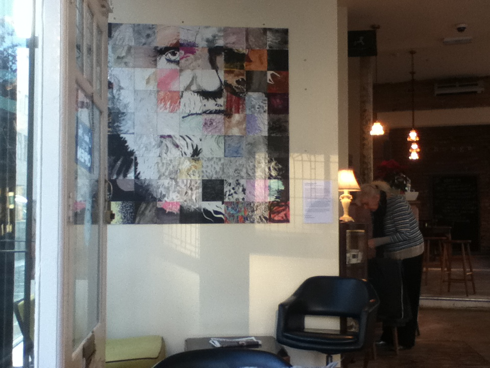
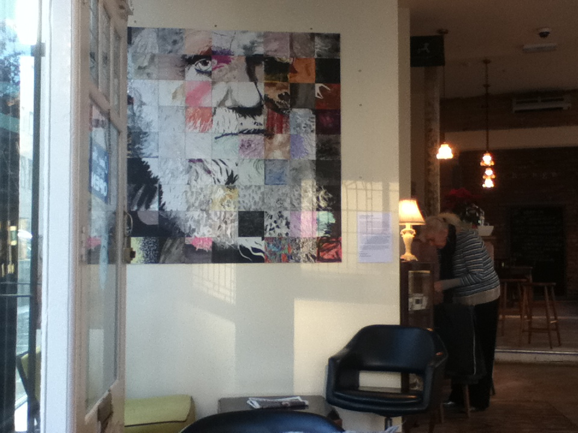
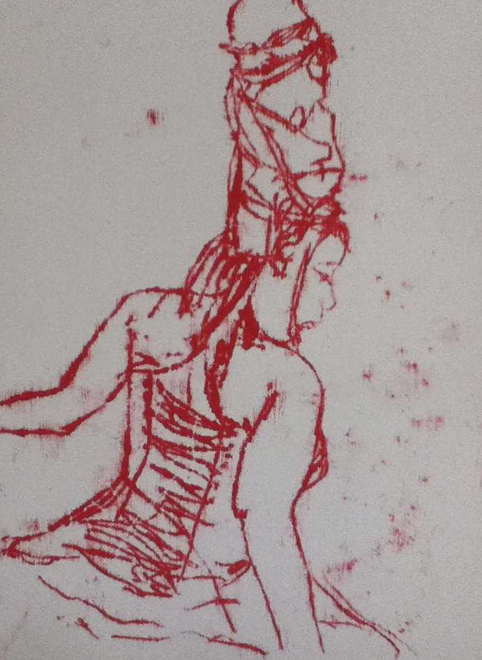
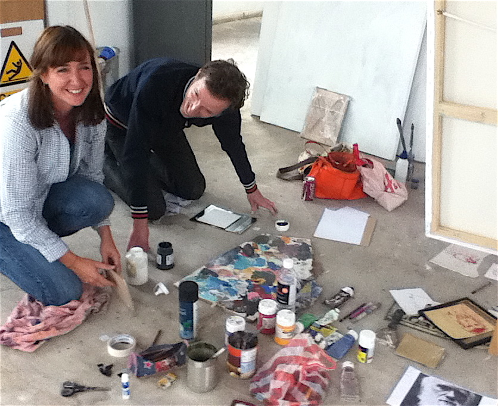
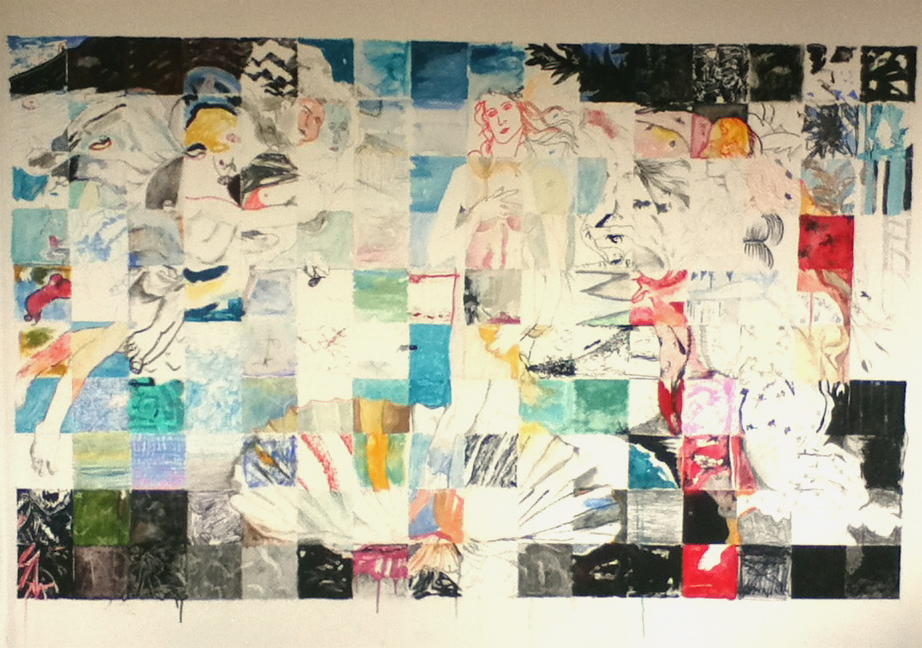

Darwin looked really cool in the Exchange bar in Leicester….
but we had to take him down…. bits came off and thats no good!
Fine artist who specialises in drawing and painting.
but we had to take him down…. bits came off and thats no good!
Pop into THEM… Talent House East Midlands in St. Martins Square Leicester. Its got some fab work in there, including two of mine! Open til Christmas.
Working on Darwin drawing project with Kevin which is really exciting and looking forward to showing it at the Exchange bar in Leicester in Jan 2012 along with some more of our stuff…
Our new project, thats me and Kevin, is going to be a visual game with Charles Darwin…
with some possible workshops in the future… whoop whoop!!
and new mono prints from me…. out of my comfort zone…
me and Kevin are amazed at our Birth of Venus…
I moved into my new studio space… whoop whoop, its in the middle of Leicester and its fab, with a great roof space and deckchairs too! Its called the attic fine arts, an independent non profit work space for artists. Its a really great space and there are loads of enthusiastic guys doing exciting stuff.